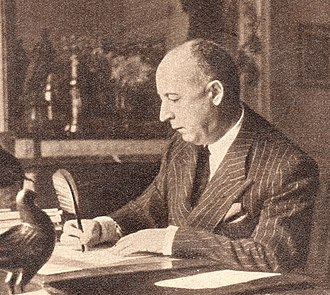

کریستیان دیور (به فرانسوی: Christian Dior) (زادهٔ ۲۱ ژانویهٔ ۱۹۰۵ – درگذشتهٔ ۲۴ اکتبر ۱۹۵۷) طراح مد فرانسوی بود که بهعنوان یکی از سرشناسترین بنیانگذاران خانه مد در جهان و با نام «دیور» نیز شناخته میشود. مهارتهای دیور باعث استخدام و طراحی او برای شخصیتهای مختلف دنیای مد شد تا صنعت مد را در طول جنگ جهانی دوم حفظ کند. پس از جنگ، او خانه مد دیور را تأسیس کرد و مجموعهای با نام "ظاهر جدید" را معرفی کرد.این مجموعه در سال ۱۹۴۷ به نمایش درآمد و شامل لباسهایی با شانههای گرد، کمر باریک و دامنهای بسیار پفدار بود. ظاهر جدید جشنوارهای از زنانهگی افراطی و تجمل در مد زنان بود. در طول زندگیاش، جوایز متعددی برای بهترین طراحی لباس دریافت کرد. او در سال ۱۹۵۷ درگذشت.
کریستین دیور در گرانویل، یک شهر ساحلی در سواحل نرماندی فرانسه بهعنوان دومین فرزند از پنج فرزند موریس دیور به دنیا آمد. پدرش ثروتمند و یک تولیدکننده کود بود و همسر او، ایزابل کاردامونه نام داشت. دیور پس از تولد تا سن ده سالگی در نورماندی فرانسه ماند و در ده سالگی به همراه والدین خود به پاریس رفت. اما آنها تابستان هر سال را در خانه نرماندی میگذراندند. در سال ۱۹۲۸ (میلادی) پس از تحصیل در علوم سیاسی، در ارتش به خدمت پرداخت. خانواده او دوست داشتند که او دیپلمات شود. اما او بیشتر به هنر علاقه داشت.
پس از فارغالتحصیلی از دانشگاه در سال ۱۹۲۸ (میلادی) با قرض پولی از پدرش یک نمایشگاه هنری باز کرد. در مدت کوتاهی، این نمایشگاه میزبان آثار افراد صاحب نامی مانند به ژرژ براک، پابلو پیکاسو، ژان کوکتو و ماکس ژاکوب شد. او کار طراحی پوشاک را در سال ۱۹۳۵ (میلادی) با بازگشت به پاریس و فروش طرحهای نخستین خود آغاز کرد. او طرحهای خود را به مجلههایی مانند فیگارو ایلوستر میفروخت. پس از چند سال روبرت پیگرت، طراح پوشاک، او را در سال ۱۹۳۸ (میلادی) به عنوان "دستیار طراح" استخدام کرد. در طول جنگ جهانی دوم، دیور در جنوب فرانسه خدمت میکرد. سپس در سال ۱۹۴۱ (میلادی) دوباره به پاریس بازگشت و در سالن طراحی بزرگتری برای لوسیه لیلانگ مشغول به کار شد. در سال ۱۹۴۶ (میلادی) مارسل بوساک (دارنده کارخانهٔ پارچه و یکی از ثروتمندان فرانسه) از کریستیان دیور دعوت کرد تا برای «خانه مد فیلیپ اِت گستون» طراحی کند. اما دیور این درخواست را نپذیرفت. زیرا میخواست یک خانه ی مد تازه باز کند. دیور در سال ۱۹۴۷ (میلادی) با پشتیبانی مارسل بوساک، سالن مد خود را باز کرد. دیور کمک کرد تا پاریس محاصرهشدهٔ پس از جنگ، دوبار به پایتخت و مرکز مد تبدیل شود. هر کدام از مجموعههای او در سراسر این دوره دارای موضوعی خاص بودند. در بهار ۱۹۴۷ (میلادی) مدلی با نام پیشنهادی کارول یا "شکل ۸" ارائه کرد که مدل تازهای با شانههای برجسته، رانهای مشخص و برجسته و کمری باریک بود. درمجموعه بهار سال ۱۹۵۳ (میلادی) با نام "لاله"، تعداد زیادی تصویرهای پرگل و نقشدار را به نمایش گذاشت. مدل "خط A" بهار ۱۹۵۵ (میلادی) با کمری نامشخص و نیمرخی صاف که بر روی رانها و پاها پهن و عریض میشد به حرف A شباهت داشت. بعضی از طرحهای دیور به زمان امپراتوری دوم و سایر سبکهای تاریخی شباهت داشت و از روی آنها شبیهسازی شده بود، البته او پوشاکهای مردانه نیز طراحی میکرد و آنها را در بخشی از مدلهای قفسه مدرن قرار میداد. دیور به همراه شریک خود جکووس رووت، در ایجاد قراردادهای کاری در تجارت مد، پیش قدم بود. در سال عطر دیور ترتیب داد که نه تنها برای او ایجاد درآمد میکردند بلکه او را به یک نام آشنا تبدیل کردند.
دیور، درحالیکه در مونتهکاتینی ترمه ایتالیا تعطیلات خود را سپری میکرد، در ۲۳ اکتبر سال ۱۹۵۷ درگذشت. برخی از گزارشها علت مرگ او را سکته قلبی پس از خفگی بر اثر گیرکردن استخوان ماهی در گلویش نوشتند. مجله تایم اعلام کرد که او در اثر سکته قلبی پس از ورقهای بازی درگذشتهاست. به هر حال تاکنون مرگ وی در هالهای از ابهام قرار دارد و علت درگذشت دیور همچنان صراحتاً اعلام نشدهاست. مرگ نابهنگام دیور در سال ۱۹۵۷ دنیای مد را از یک رهبر بزرگ صاحب سبک محروم کرد. کریستین دیور تنها یک دهه تحت نام تجاری خود طراحی کرد، اما تأثیر او در مد، تا سالها پس از مرگش باقی ماند.
